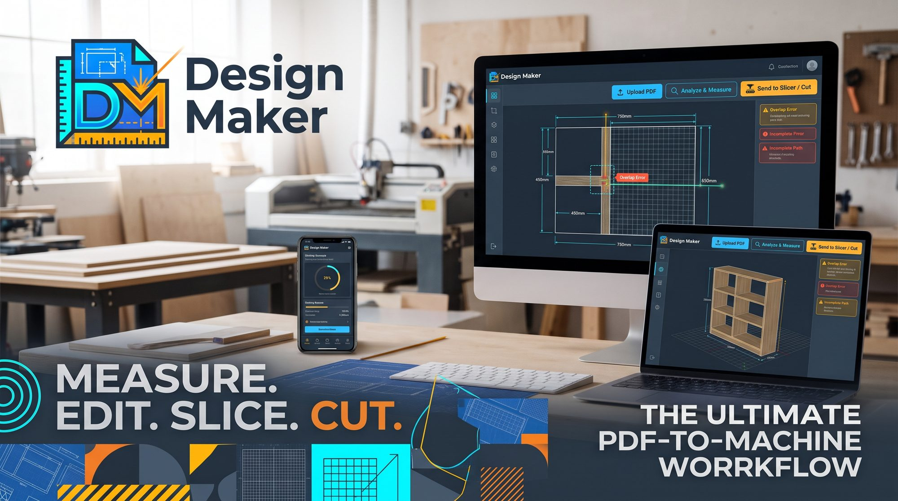

מעלים את קובץ הנגרות של האדריכל, בונים כל ארון ויחידה, ומקבלים מודל תלת־ממדי, הוראות הרכבה, רשימת חיתוך, סידור על פלטות והצעת מחיר — עם התראה על כל מידה חסרה או שגויה. Upload the architect’s carpentry file, build each cabinet and unit, and get a 3D model, assembly steps, a cutting list, board layouts and a price quote — with a warning for every missing or wrong measurement. Загрузите столярный файл архитектора, соберите каждый шкаф и модуль — и получите 3D‑модель, порядок сборки, спецификацию деталей, раскрой листов и коммерческое предложение, с предупреждением о каждом недостающем или ошибочном размере.
ארבעה שלבים, בלי ידע טכני.Four steps, no technical knowledge needed.Четыре шага, без технических знаний.
PDF, PNG או JPG מהאדריכל. כל קובץ נבדק לפני השימוש.PDF, PNG or JPG from the architect. Every file is safety-checked first.PDF, PNG или JPG от архитектора. Каждый файл проверяется на безопасность.
ארון, אי, שולחן או כמה יחידות יחד — ליד השרטוט, עם כלי מדידה.A wardrobe, an island, a table or several units together — next to the drawing, with measuring tools.Шкаф, остров, стол или несколько модулей — рядом с чертежом, с инструментами измерения.
מידות חסרות, חלקים מתנגשים, חלקים שלא נכנסים לפלטה — מסומנים באדום.Missing sizes, parts that clash, parts that won’t fit a board — marked in red.Недостающие размеры, пересечения деталей, детали больше листа — отмечены красным.
הצעת מחיר ללקוח, רשימת חיתוך וסידור פלטות לנגרייה.A quote for the client, a cutting list and board layouts for the shop.Предложение для заказчика, спецификация и раскрой для цеха.
כל מה שצריך מהשרטוט ועד ההתקנה, במקום אחד.Everything from the drawing to the installation, in one place.Всё — от чертежа до монтажа — в одном месте.
מסובבים, מפרקים לחלקים ורואים כל דופן, מחיצה, מגירה ומכשיר.Turn it, pull it apart and see every side, partition, drawer and appliance.Вращайте, разбирайте на детали и смотрите каждую стенку, перегородку, ящик и технику.
מה מתחבר למה, באיזה בורג וכמה — ורמת קושי לכל פריט.What connects to what, with which fastener and how many — plus a difficulty level for every item.Что с чем соединяется, каким крепежом и сколько — и уровень сложности каждого изделия.
מידה שלא מסתכמת, נישה קטנה מדי למדיח, מדף ארוך מדי — לפני שחותכים.Widths that don’t add up, a niche too small for the dishwasher, a shelf too long — before you cut.Размеры не сходятся, ниша мала для посудомойки, полка слишком длинная — до раскроя.
כל חלק במ״מ, פרזול וברגים, וכמה פלטות צריך להזמין.Every part in mm, hardware and screws, and how many boards to order.Каждая деталь в мм, фурнитура и крепёж, и сколько листов заказать.
לפי המחירים שלכם — פלטות, אבן, צבע, פרזול ועבודה — עם אפשרות לשנות כל שורה.From your own prices — boards, stone, lacquer, hardware and labour — and every line can be changed.По вашим ценам — листы, камень, эмаль, фурнитура и работа — любую строку можно изменить.
כל העלאה נבדקת: סוג הקובץ, קוד מוסתר ב־PDF, וסריקת וירוסים.Every upload is checked: the real file type, hidden code inside PDFs, and a virus scan.Каждая загрузка проверяется: настоящий тип файла, скрытый код в PDF и проверка на вирусы.
עברית מימין לשמאל, אנגלית ורוסית — מחליפים בלחיצה.Hebrew right-to-left, English and Russian — switch with one click.Иврит справа налево, английский и русский — переключение одним нажатием.